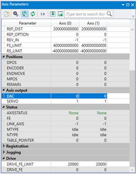

Axis Parameter
None
This is the maximum allowable following error applied to the DRIVE_FE value, i.e., the actual following error in a remote drive which is received via a fieldbus such as EtherCAT. When exceeded the controller will generate an AXISSTATUS error, by default this will also generate a MOTION_ERROR . The MOTION_ERROR will disable the WDOG relay thus stopping further motor operation.
This limit may be used to guard against fault conditions such as mechanical lock-up, loss of encoder feedback, etc.
When either DRIVE_FE_LIMIT or FE_LIMIT is exceeded, bit 8 of AXISSTATUS is set.
DRIVE_FE_LIMIT is required when an EtherCAT remote drive is running in position (CSP) mode and the PDO cyclic data includes the Following Error Actual value from the drive. For example, when DRIVE_PROFILE is set to 1 or 2 in the MC_CONFIG the profile includes the DRIVE_FE value.
|  |
The maximum allowable following error in user units. The default value is 20000 encoder edges.
Initialise the axis as part of a STARTUP routine. FE_LIMIT is set larger than DRIVE_FE_LIMIT because the internal calculated FE is usually bigger than the following error calculated within the remote drive.
FOR x = 0 to 4
BASE(x)
UNITS = 100
FE_LIMIT = 50
DRIVE_FE_LIMIT = 10
SPEED = 100
ACCEL = 1000
DECEL = ACCEL
NEXT x